핀란드 - 헬싱키
헬싱키는 빌레발로님 덕에
(그리고 내가 북유럽 가겠다고 노래를 부른 이유이기도 한^^;;;)
잔뜩 기대하고 갔는데
길거리에 왜 쌍팔년도 메탈청년들이........OTL
동생이랑 숙소찾아가믄서
"아니 여긴 왠 양아치들이 일케 많아!!"
할정도로;;; 금발 갈기머리에 메탈티셔츠에 찢어진 청바지;;
근데 요즘 대세는 이모란다 아가들아~
아니 이게 왠;;;; 얼굴은 다 애기들인데 옷입은건
가끔 메탈공연장에서보는 40대아저씨의 '나 왕년에 ROCK좀 했오!!'
패션이라니.........;;;; 웃겼어요 ㅋㅋㅋㅋ
헬싱키는 빌레발로님 덕에
(그리고 내가 북유럽 가겠다고 노래를 부른 이유이기도 한^^;;;)
잔뜩 기대하고 갔는데
길거리에 왜 쌍팔년도 메탈청년들이........OTL
동생이랑 숙소찾아가믄서
"아니 여긴 왠 양아치들이 일케 많아!!"
할정도로;;; 금발 갈기머리에 메탈티셔츠에 찢어진 청바지;;
근데 요즘 대세는 이모란다 아가들아~
아니 이게 왠;;;; 얼굴은 다 애기들인데 옷입은건
가끔 메탈공연장에서보는 40대아저씨의 '나 왕년에 ROCK좀 했오!!'
패션이라니.........;;;; 웃겼어요 ㅋㅋㅋㅋ
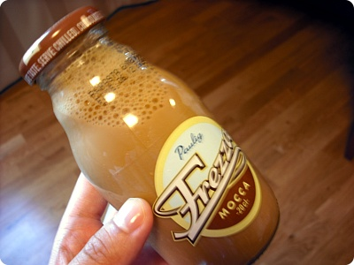
헬싱키에서 도전해본 커피우유
바이킹라인 예약덕에 할인받은 SOKOS 호텔
크흡 이틀동안 호강했음 ㅜㅜ
크흡 이틀동안 호강했음 ㅜㅜ
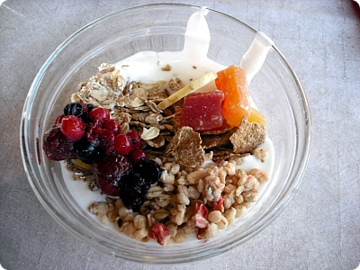
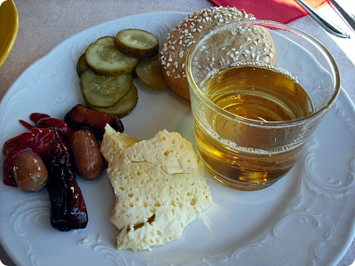
호텔 조식 (여전히 소세지에 계란 ^^)
여러 종류 빵이랑 요거트 소세지 미트볼 등등
둘러보면 대부분 빵위에 햄/치즈/양상추/파프리카 슬라이스한것
정도 올려서 그 위에 샌드위치처럼 빵을 덮지않고 손으로
파프리카를 꾹 붙들고 먹길래
나도 한번 도전해봤음^^
이틀을 이 호텔에서 묵고 나머지 이틀은 호스텔로 옮겼는데(땅그지..흑흑)
우선 나오는 종류는 비슷했다
하지만 역시 치즈랑 햄 질이 달라 ㅜㅜ 흑흑
요기 호텔 조식 맛났음///
여러 종류 빵이랑 요거트 소세지 미트볼 등등
둘러보면 대부분 빵위에 햄/치즈/양상추/파프리카 슬라이스한것
정도 올려서 그 위에 샌드위치처럼 빵을 덮지않고 손으로
파프리카를 꾹 붙들고 먹길래
나도 한번 도전해봤음^^
이틀을 이 호텔에서 묵고 나머지 이틀은 호스텔로 옮겼는데(땅그지..흑흑)
우선 나오는 종류는 비슷했다
하지만 역시 치즈랑 햄 질이 달라 ㅜㅜ 흑흑
요기 호텔 조식 맛났음///
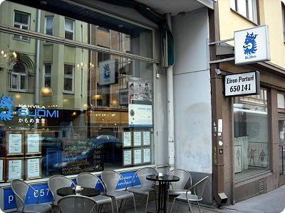
영화 카모메식당 에 나온다는 수오미
가게들어가보니까 일본관광객들로 바글바글
가게안에 카모메식당 포스터도 붙어있다
핀란드 가정식을 먹을수있는 식당 ^^
좀 다른게 먹고싶었다;;;
그리고 동생곰은 미트볼 - 요게 핀란드식 육류에 산딸기 소스!!! +_+
핀란드 유명건축가 Alvar Aalto가 설계했당
마시쏘~~~~//////
파제르 카페 - 핀란드 쪼코 메이커
홍차에 바닐라 초코를 넣은 Fazer Chocolate가 유명^^
아슈크림 하나랑 / Fazer Chocolate 홍차 / 초코케키 주문
초코케키가 정말 맛났어요!!! +_+
쪼코맛이 굉장히 진하면서도 무식하게 달지않은!! (←응??)
왜;; 가끔 쪼코케키 잘못먹으면 머리 띵~해질정도로 달아서
뒷맛이 별로인게 있는데 이건 뒷맛도 깔끔하고
쪼코맛도 진하고~대책없이 달지도 않고~나이스~!!! (←;;;;)
그리고 봉다리 쪼코 ^^
요것도 맛났어요//// ㅎㅎ
노르웨이에서 베르겐에서도 중식당 갔었는데 훗훗
무민계곡 보러 Tamperer가서 들린 중국집
사실 외국에서 중국집은 안정빵(...;;)에 쌀과야채가 먹고싶어~
할때 만만해서 가는곳인데^^
여기 튀김/국수/육류요리까지 모두 훌륭
특히 튀김이 바삭바삭하고 기름기도 적고 맛있었어요~~~>_<
후식 커피랑 과자~//
가게들어가보니까 일본관광객들로 바글바글
가게안에 카모메식당 포스터도 붙어있다
핀란드 가정식을 먹을수있는 식당 ^^
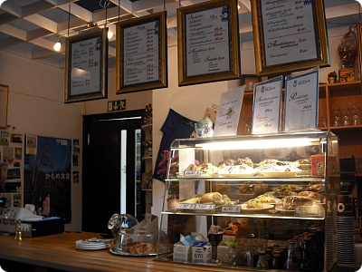
메인하나 빵하나 커피나 음료 하나 선택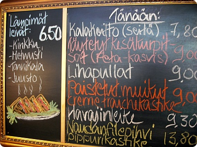
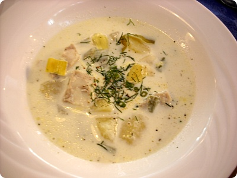
난 수프~ 계속 고기고기 빵 식단이어서좀 다른게 먹고싶었다;;;
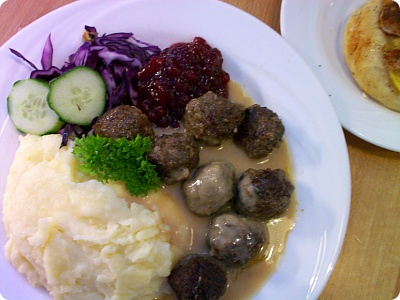
그리고 동생곰은 미트볼 - 요게 핀란드식 육류에 산딸기 소스!!! +_+
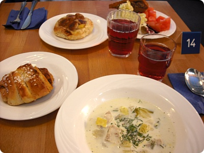
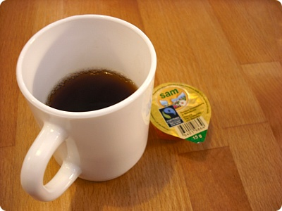
카페알토 - 핀란드에서 유일하게 알토라는 이름이 붙은 카페핀란드 유명건축가 Alvar Aalto가 설계했당
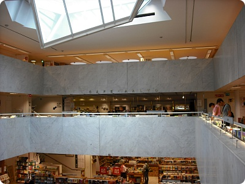
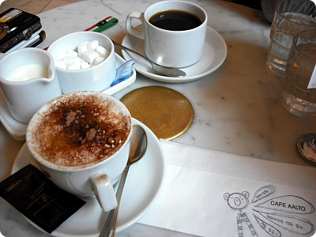
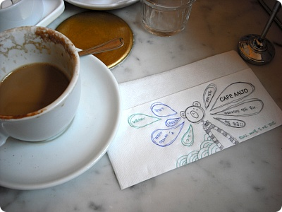
커피마시믄서 끄작끄작~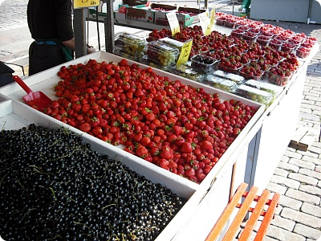
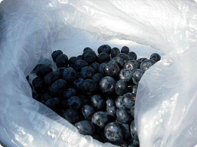
오며가며 마켓에서 열심히 사먹은 블루베리 / 라즈베리마시쏘~~~~//////
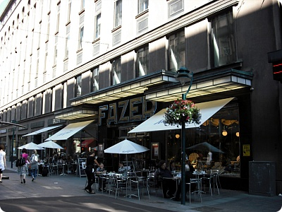
파제르 카페 - 핀란드 쪼코 메이커
홍차에 바닐라 초코를 넣은 Fazer Chocolate가 유명^^
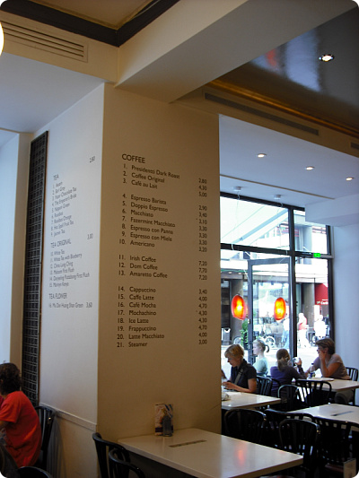
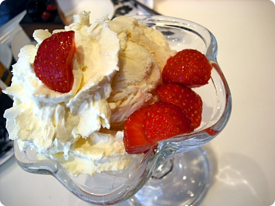
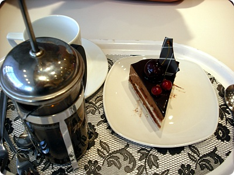
아슈크림 하나랑 / Fazer Chocolate 홍차 / 초코케키 주문
초코케키가 정말 맛났어요!!! +_+
쪼코맛이 굉장히 진하면서도 무식하게 달지않은!! (←응??)
왜;; 가끔 쪼코케키 잘못먹으면 머리 띵~해질정도로 달아서
뒷맛이 별로인게 있는데 이건 뒷맛도 깔끔하고
쪼코맛도 진하고~대책없이 달지도 않고~나이스~!!! (←;;;;)
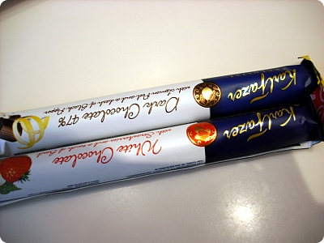
그리고 봉다리 쪼코 ^^
요것도 맛났어요//// ㅎㅎ
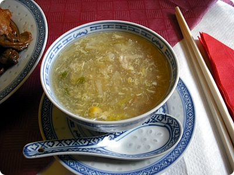
이상하게 수도를 벗어나면 중식당을 가게되는^^노르웨이에서 베르겐에서도 중식당 갔었는데 훗훗
무민계곡 보러 Tamperer가서 들린 중국집
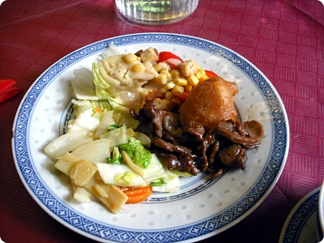
런치부페를 이용했는데 여기 진짜 맛났어요+_+사실 외국에서 중국집은 안정빵(...;;)에 쌀과야채가 먹고싶어~
할때 만만해서 가는곳인데^^
여기 튀김/국수/육류요리까지 모두 훌륭
특히 튀김이 바삭바삭하고 기름기도 적고 맛있었어요~~~>_<
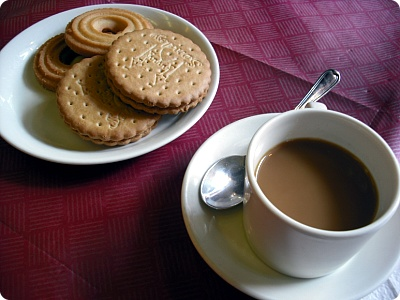
후식 커피랑 과자~//
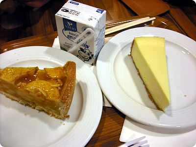
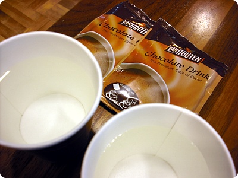
요건 헬싱키 공항에서
유로남은거 탈탈 털어서 주문한 치즈케키 / 애플파이
+ 뜨거운 물은 무료라길래(핀란드 만세 ㅜㅜ)
낼름 두잔 받아서 여기저기 부페나 식당에서 쟁여온(....;;)
핫코코아 마셨어요~>_<
북유럽 먹부림 끗~!!
이.....이제 스페인만 올리면 끗끗끗~ :D
유로남은거 탈탈 털어서 주문한 치즈케키 / 애플파이
+ 뜨거운 물은 무료라길래(핀란드 만세 ㅜㅜ)
낼름 두잔 받아서 여기저기 부페나 식당에서 쟁여온(....;;)
핫코코아 마셨어요~>_<
북유럽 먹부림 끗~!!
이.....이제 스페인만 올리면 끗끗끗~ :D